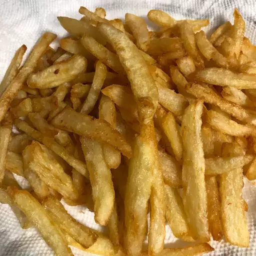

French fries

Description
Best way to eat potatoes.
Haven't met a single person that dislikes them.
Ingredients
- 1 large russet potato
- 2 cups vegetable oil for frying, or as needed
- Salt to taste
Steps
- Soak potato strips in a large bowl of water for about 30 minutes.
- Pat with papel towels until thoroughly dry.
- Heat oil in a deep-fryer or large saucepan to 275 degrees F (135 degrees C). Gently add potatoes to the
hot
oil and fry for about 5 minutes, stirring and flipping the potatoes occasionally.
- Use a slotted spoon to transfer potatoes to a paper towel-lined plate. Let cool completely.
- Heat oil again, but this time to 350 degrees F (175 degrees C). Add potatoes and fry a second time until
golden brown, 5 to 6 minutes.
- Remove from the deep-fryer and blot with a paper towel. Sprinkle with salt to serve.
Back to recipes